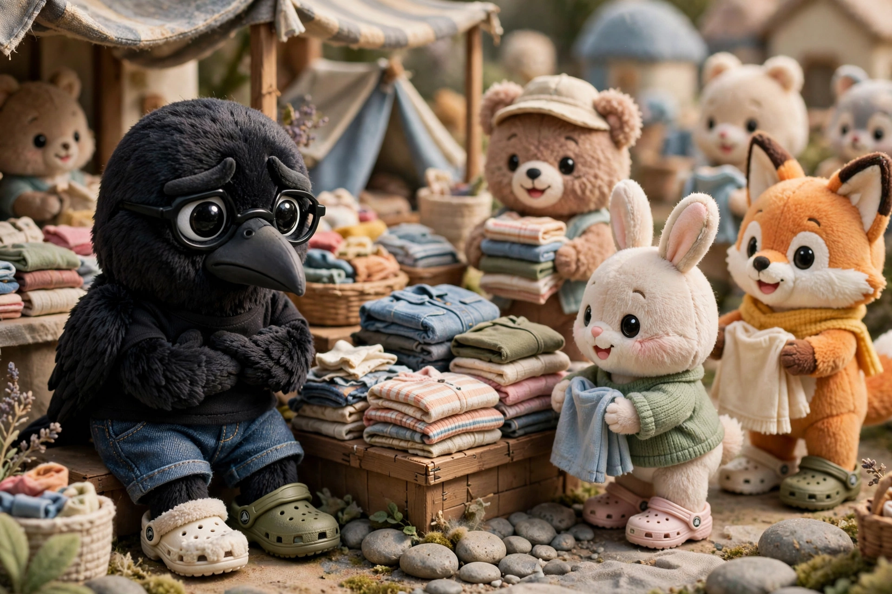
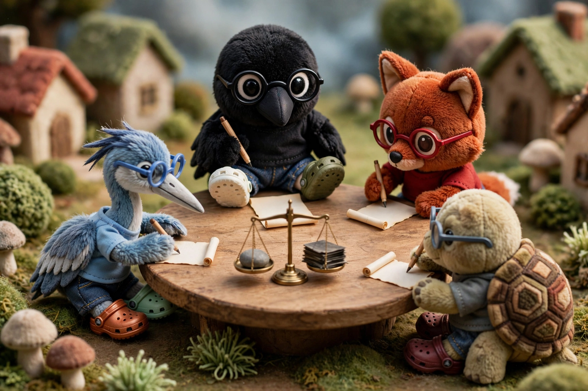
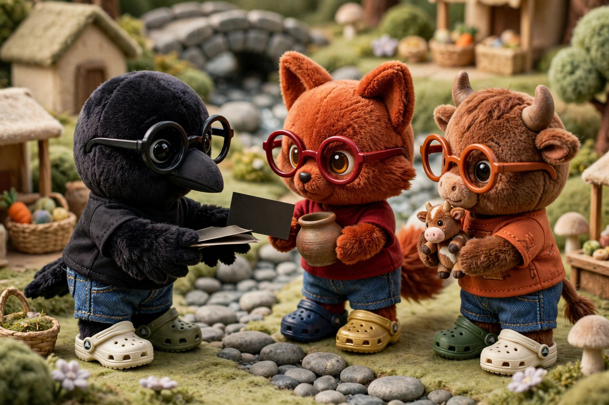
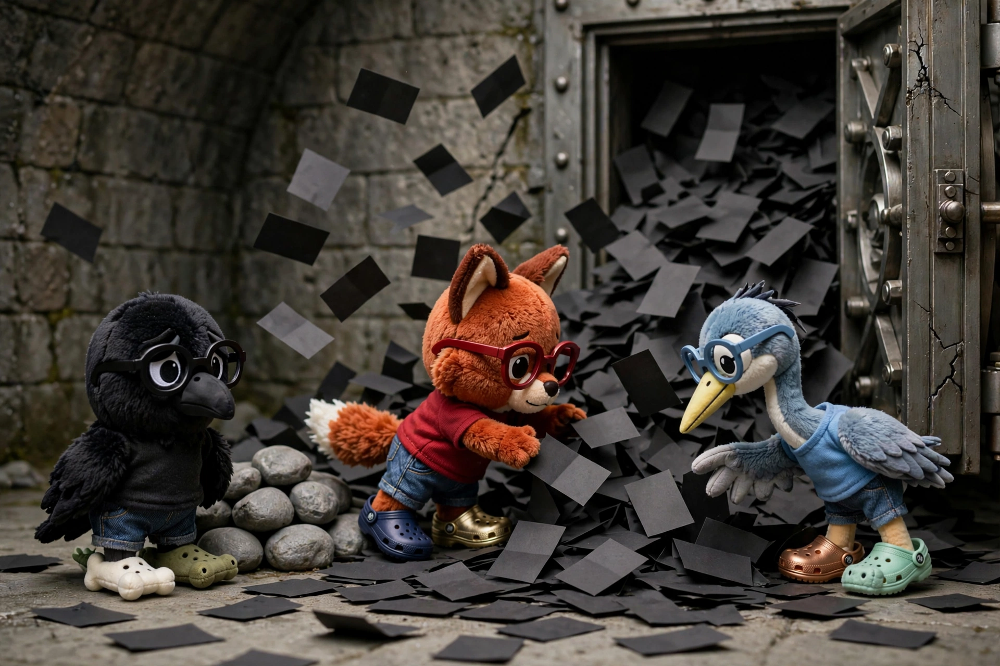
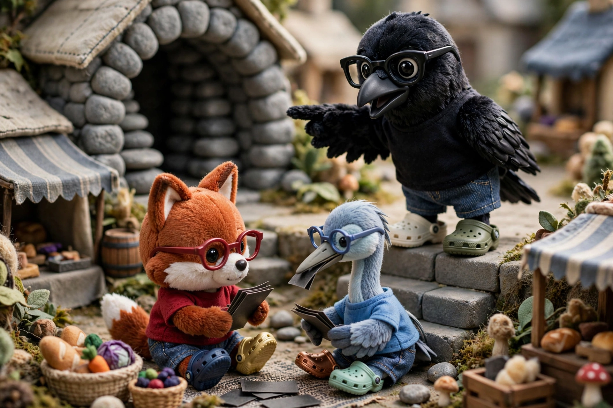
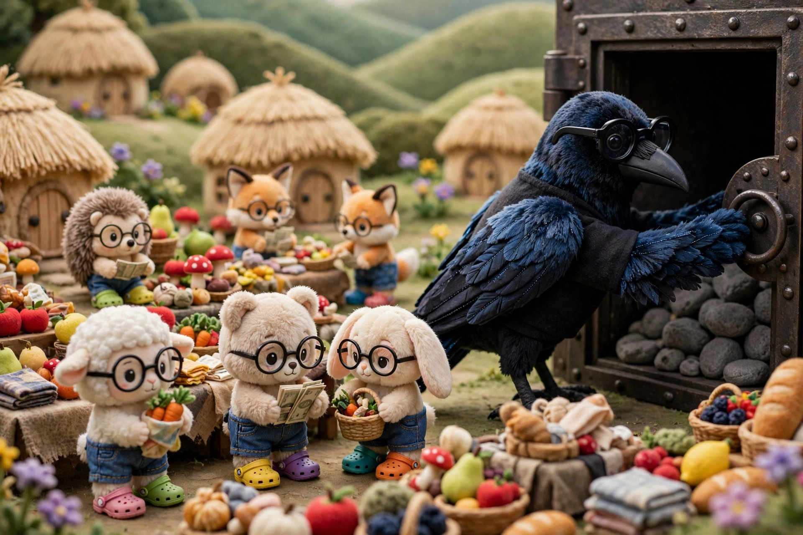

Fiat
Devaluation

The purple-stone village is also struggling. The village specializes in making clothes; it has spinners and weavers, knitters and dyers, tailors and dressmakers. However, the village struggles to export clothes, since other villages also make their own clothes at competitive prices. So the village’s bankers propose an idea: what if the purple central bank expanded its balance sheet to create reserves and then used those reserves to buy foreign currencies. Then there would be more purple stones relative to foreign currencies, which would decrease the price of purple money. The bankers called this currency devaluation. Why, the village elders ask, would they want to do that? The bankers reply that if purple money is cheaper relative to, say, black money, then in the crow’s village, purple clothes would be cheaper than black clothes. And so villagers in the crow’s village would buy more purple clothes. Of course, this would mean that the purple village would struggle to import goods, but it would thrive at exporting them. After much debate, the elders agree, and the purple central bank begins devaluing its currency. Some villages enjoy the cheaper clothing from the purple village and allow their local clothing industries to struggle, while other villages protect their local industries by levying a special tax on imported clothes, called tariffs. Over time, many villages devalue their currencies to become more competitive, while others impose tariffs to protect their domestic industries.
Conference

The central bankers debate monetary policy. They debate topics like currency devaluation, extreme inflation, and banking system defaults. They realize that trade between banking systems is lacking cooperation and flexibility. Each village is engaging in competitive or protectionist policies that limits free trade. And a village default impacts everyone, since there is no backstop. So the elders agree that they should meet and discuss a resolution, and they gather in mid-summer at a beautiful hotel in the crow’s village. After much debate, the leaders decide to formalize a few things. First, they agree that black money would be the region’s official reserve currency, and that a single black banknote would always be convertible into thirty-five black stones. Second, they decide that each central bank would keep its exchange rate with the black currency fixed. They called this dynamic a currency peg. This meant that each central bank would maintain a balance of black money in reserve and would then buy or sell this black money in exchange for its own currency, in order to maintain the exchange rate. For example, if red stones were worth too little relative to black stones, the red central bank would buy red stones for black. The idea behind this system was that that if black money was stable and if every other currency was pegged to black money, then every other currency would also be stable. Finally, they agree that some flexibility was needed in the system, and they create a clearinghouse for the central banks. This would be analogous to a clearinghouse for banks within a single village: if any central bank struggled to defend its currency peg due to liquidity issues, this new clearinghouse could lend as a last resort. In theory, this system would prevent currency devaluations and protectionist policies, limit the fallout of debt defaults, and add flexibility during gridlocks.
Privilege

This status as the region’s reserve currency gave the crow’s village an important advantage. Other villages had to make and sell goods in order to acquire money used to trade. But the crow’s village could, within limits, acquire goods simply by issuing money and debt that everyone else wanted to hold, because people preferred to save and trade using black money, and now because central banks needed to maintain some black money in reserve. This made debt cheaper for the crow’s village, and the crow’s government could fund public programs more easily, because everyone was happy to hold black bonds. Furthermore, villagers in the crow’s village could buy cheap goods and services from across the region, because everyone wanted black money.
Dilemma

However, the success of black money created a dilemma. Over time, the other villages accumulated vast quantities of black banknotes and debt denominated in black money. This meant, however, that there were many claims for black money across the region. And just as the goat worried about convertibility of his bank deposits into special gray stones, so central banks wondered about convertibility of black money into special black stones. As long as few banks tried to convert, this was not a problem. But as more and more black money flowed through the system, the central banks wondered: was every black banknote really worth thirty-five black stones? And thus a dilemma arose: the more successful black money was, the harder it became for the crow’s central bank to maintain the promise of convertibility.
Float

The crow’s village elders had a problem. There was too much black money in the system, relative to black stones held by the crow’s central bank. To maintain convertibility, they would need to make black money more expensive. They could buy back black money using foreign currencies, but they were constrained here. There was much more black money than any other currency. And they could raise the central bank’s overnight interest rate and thus raise the price of money in the village, but this would discourage villagers from taking out loans. It would hurt the crow’s village’s economy. In other words, the crow’s central bank was struggling to defend its own kind of peg, that of convertibility of a black banknote into thirty-five special black stones. And so after much discussion, the elders of the crow’s village made an extraordinary announcement: the crow’s central bank would no longer exchange its banknotes for special black stones at all. Anyone could trade black stones, but their price in terms of black banknotes would not be fixed by convertibility; the parlance of the central bankers, the price would float.
Fiat

At first, elders and bankers and traders around the region were shocked. Even the crow’s village’s central bankers worried about what would happen next. And yet nothing happened. Everyone in the crow’s village still had to pay taxes with black money. Wages, loans, and contracts were still denominated in black money. Commercial banks settled debts using reserves from the crow’s central bank. And the crow’s village was still the strongest economy in the region, with a large military, a liquid and transparent financial system, and a relatively fair judiciary. People across the region still preferred to hold black money over any other, even though a black banknote was now just a piece of paper which could not be converted into special black stones. The bankers called this new system fiat money, because its value depends on the institutions and economy of the crow’s village, not on convertibility into a commodity whose supply was governed by labor. Of course, the elders of the crow’s village were still constrained. They could create unlimited amounts of black money, but they could not create unlimited amounts of goods from the crow’s village: eggs, bread, cloth, wine, jewelry—these all had to be produced by people in the crow’s village. So if the crow’s central bank created money recklessly, they might experience inflation, and other villages might lose trust in the system. But within reason, fiat money gave the crow’s village immense flexibility and power, while still maintaining the village’s status as the region’s reserve currency.